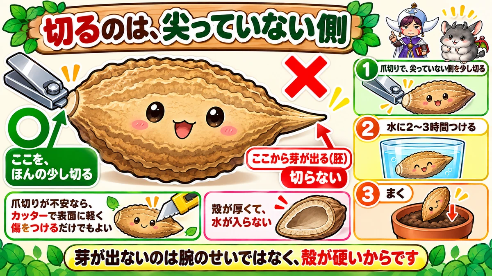
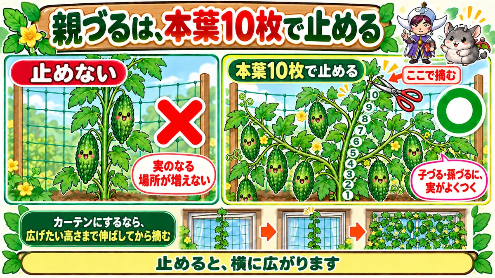
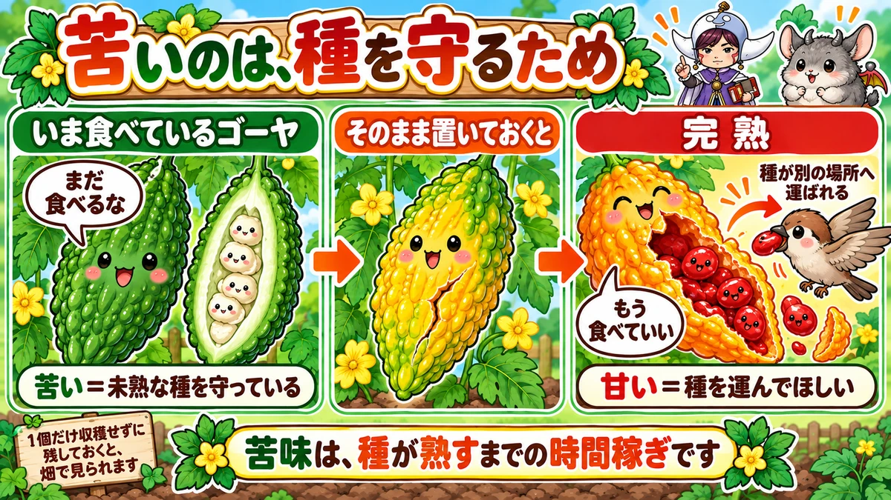

Nick bitter gourd seed with nail clippers 🌿 The shell is why it won't germinate

🌿 "I sowed it and nothing came up for ages."
🌿 "It germinated and then just sat there."
🌿 "I forgot one and it went yellow and split open."
Hello, I'm Eiko. Eight years of growing vegetables organically and without pesticides, and a teaching licence in science.
The headline:
With bitter gourd, germination is nearly all of it.
And if it doesn't come up, that isn't your technique. The shell is hard. A pair of nail clippers solves it.
The variety decides the bitterness
Not widely known: bitterness varies enormously by variety.
- Short, thick types — less bitter. Good for stir-frying
- Long, slender types — strongly bitter. Better simmered or dressed
- White types — mild enough to eat raw
If you'd like to grow it but don't love the bitterness, choose a white or short-thick type. They hardly seem like the same vegetable.
It won't germinate because the shell is hard

What this diagram says （図解の文字）
- Cut the blunt end, not the pointed one
- ○ "take the tiniest sliver off here" ／ ✗ "the shoot comes out here (the embryo)" — "don't cut"
- 1 "nick the blunt end with nail clippers" 2 "soak in water for 2–3 hours"
Look at the seed
Large, flat and hard — nothing like a tomato or lettuce seed. That thick shell barely lets water through.
A seed has to take up water before it can germinate. If it can't, nothing happens, indefinitely.
So you make a way in
- Nick the shell with nail clippers
- Then soak it in water for 2–3 hours
That's all. Water enters at the cut and germination comes evenly.
Cut the right end
Don't get this one wrong. Look closely and one end is slightly pointed.
The shoot comes out of the pointed end. So cut the blunt end.
If clippers make you nervous, scratching the surface with a blade is enough. The aim is only a route for water.
It's slow after germinating, too
Even once it's up, nothing much happens for a while. Bitter gourd is genuinely slow early on.
This is where people decide it has failed and plant something else beside it — and then the gourd grows normally and there isn't room.
Don't rush it. It catches up astonishingly later.
There's no need to sow early
Bitter gourd comes from tropical Asia. It grows best at 25–30 °C (77–86 °F) — which means high summer is its normal weather.
Sown in early spring it simply doesn't move. Waiting until it's warm is plenty.
And it fruits as the days shorten
A nice detail: bitter gourd is a short-day plant. It sets fruit more readily as the day length decreases.
The longest day is midsummer, so the plant's real season is the weeks after that.
So don't panic about having sown late. Sown when it's warm, it's in plenty of time.
Stop the main vine at ten true leaves

What this diagram says （図解の文字）
- Stop the main vine at ten true leaves
- ✗ "not stopping it" — "the number of fruiting positions doesn't increase"
- ○ "stop at ten true leaves" — "pinch here"
- "The laterals and sub-laterals are where the fruit sets"
When the vine is running, pinch out the tip at about ten true leaves.
Laterals then come away left and right from the leaf joints, and sub-laterals after that, and it spreads.
Why stop it
Bitter gourd fruits well on the laterals and sub-laterals. Running one main vine straight up doesn't increase the number of fruiting positions.
Pinching out is a way of multiplying the fruiting stems.
For a green screen
If you're growing it for shade, adjust: run the main vine up to the height you want to cover first. Pinch it when it reaches the top of the window, and it spreads sideways from there into a sheet. Stop it where you want the area.
And the leaves release a pleasant scent when the wind moves through them — one of the small pleasures of growing it by a window.
After that, leave it alone
Once the pinching is done, let it run. The remaining jobs are picking and watering, and from here it's a very undemanding plant.
Water in proportion to the leaves
A clear rule: scale the watering to the number of leaves.
Leaves lose water. Ten leaves and a hundred leaves need very different amounts.
At the height of summer with full foliage, it can be twice a day — especially in containers and green screens, which dry fast. Touch the surface; if it's dry, water.
The roots are shallow
Bitter gourd roots shallowly, so it dislikes badly drained ground. A slightly raised bed is safer.
"Dries out quickly, and wants good drainage" sounds contradictory. What it actually wants is soil where water moves.
Science bit: the bitterness is buying time 🔬

What this diagram says （図解の文字）
- The bitterness is there to protect the seed
- "The gourd we eat" — "don't eat me yet" — "bitter = protecting unripe seed"
- "Leave it on the plant" → fully ripe → "the seed is carried elsewhere", "you may eat me now"
Why is it so bitter? Few vegetables come close.
To protect the seed.
For a plant, fruit is a device for getting seed carried away. But eaten while the seed is still immature, it achieves nothing — someone scatters seed that won't germinate.
So while the fruit is young, it makes itself bitter. "Not yet."
Fully ripe, it turns sweet
Here's the good part. Left unpicked, a bitter gourd turns yellow and eventually splits open.
The seeds inside are wrapped in bright red, sweet jelly.
The bitterness has gone. The message has changed to "please eat me".
Red and sweet means birds eat it, the seed is carried off and dropped somewhere else. That's the plan.
With children I can't think of a better demonstration: you can watch a bitter vegetable become a sweet one.
To sum up
- ✅ Germination is nearly all of it
- ✅ The shell is thick and won't take water
- ✅ Nick the blunt end with nail clippers — the shoot comes from the pointed end
- ✅ Soak 2–3 hours afterwards
- ✅ Slow after germinating too. Don't panic
- ✅ Sow once it's warm — no need to hurry
- ✅ A short-day plant: the real season is late summer into autumn
- ✅ Pinch the main vine at ten true leaves
- ✅ Fruit sets on the laterals and sub-laterals
- ✅ For a screen, run it to height first, then pinch
- ✅ Water in proportion to the leaves, and keep the bed free-draining
- ✅ Bitterness protects immature seed; ripe fruit goes sweet and red
You don't have to do all of it. Next spring, take one seed and nick it with nail clippers. The germination is a different thing entirely 🌿
Thank you for reading!